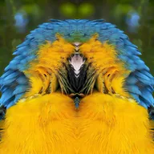

مرر

تصویر کے ایک آدھے حصے کو زاویہ اور مرکز سے متعین مرر لائن کے پار منعکس کرتا ہے۔
سیٹنگز
| سیٹنگ | قسم | رینج | ڈیفالٹ |
|---|---|---|---|
| زاویہ | زاویہ | 0° سے 360° تک | 90° |
| مرکز | پوائنٹ (X, Y) | 0 سے 1 تک | 0.5, 0.5 |
| اسٹائل | انتخاب | فولڈ, فلپ | فولڈ |
| الفا | نمبر | 0% سے 100% تک | 100% |